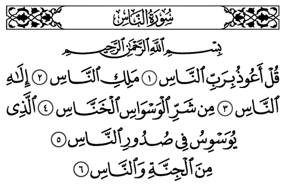

1 - En Arabe

2 - Traduction rapprochée
1. Dis : "Je cherche protection auprès du Seigneur des hommes.
2. Le Souverain des hommes,
3. Dieu des hommes,
4. contre le mal du mauvais conseiller, furtif,
5. qui souffle le mal dans les poitrines des hommes,
6. qu'il (le conseiller) soit un djinn, ou un être humain".